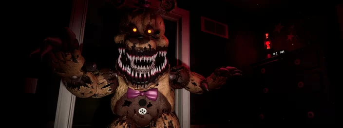
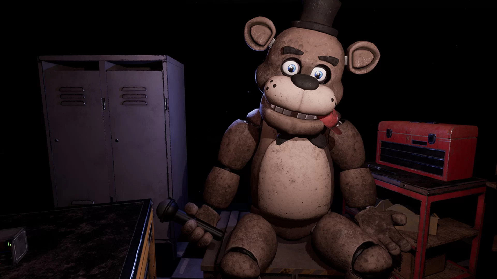

Five Nights at Freddy's é uma das franquias de terror mais populares dos últimos anos. O game apresenta monstrinhos mecânicos assassinos, cujo passatempo favorito é dar grandes sustos nos jogadores. Desde o primeiro título, lançado em 2014, a série já conta com quase dez versões, além de um novo capítulo chegando em breve.
Five Nights at Freddy's (2014)
No controle de um vigia noturno de uma pizzaria, você precisa investigar o comportamento de bonecos eletrônicos que vagam pelo local como se estivessem vivos. Para isso, é preciso monitorar o sistema de câmeras, e não deixar que esses monstrinhos ataquem você achando que é um “endoesqueleto” de um robô fora da roupa.

O jogo está disponível para iOS, Android, PS4, Xbox One, Nintendo Switch e PC
Five Nights at Freddy's 2 (2014)
Depois do sucesso do primeiro capítulo, no mesmo ano foi lançada uma sequência do game. A grande diferença fica por conta da jogabilidade, agora é possível usar uma lanterna e uma máscara de Freddy para evitar ser atacado pelas criaturas eletrônicas.

O jogo está disponível para iOS, Android, PS4, Xbox One, Nintendo Switch e PC.
Five Nights at Freddy's 3 (2015)
Trinta anos se passaram depois do segundo capítulo. A pizzaria, fechada na época, agora se transformou em uma casa mal-assombrada, e cabe mais uma vez ao vigia noturno ter que enfrentar as criaturas que ganham vida à noite. A grande novidade dessa vez é a possibilidade de prender os monstros em dutos de ventilação, porém, caso fique por muito tempo sem ar, você pode começar a ter alucinações.

O jogo está disponível para iOS, Android, PS4, Xbox One, Nintendo Switch e PC
Five Nights at Freddy's 4: The Final Chapter (2015)
O quarto capítulo da franquia muda um pouco a ambientação e tem um enredo bem diferente. Nele, você controla um garotinho que deve se proteger em casa da ameaça das perigosas criaturas eletrônicas. Para isso, ele deve trancar armários, portas e sempre vigiar o corredor para evitar a aproximação dos bonecos.

O jogo está disponível para iOS, Android, PS4, Xbox One, Nintendo Switch e PC.
Five Nights at Freddy's: Sister Location (2016)
Mudando bastante coisa, o quinto título da franquia coloca os jogadores em uma nova pizzaria: a Circus Baby's Rentals and Entertainment. O jogador precisa sobreviver novamente por cinco noites, mas desta vez tendo que escapar por apertados dutos de ventilação e cumprir diferentes missões ao longo das noites.
O jogo está disponível para iOS, Android, PS4, Xbox One, Nintendo Switch e PC.
Freddy Fazbear's Pizzeria Simulator (2017)
O sexto game da franquia mistura horror com uma pegada de simulador. Durante o expediente, é preciso administrar a famosa pizzaria onde residem as criaturas eletrônicas. Mas à noite, você precisa continuar escapando do ataque dos bichinhos, sem correr o risco de quebrá-los e dar prejuízo para a sua empresa

O jogo está disponível para iOS, Android, PS4, Xbox One, Nintendo Switch e PC.
Five Nights at Freddy's: Ultimate Custom Night (2018)
Com uma premissa mais curta e diferente, o sétimo jogo da franquia permite que você escolha a criatura da qual você deve se proteger. Ao contrário de cinco noites (como o título sugere), o jogador precisa sobreviver apenas a uma, porém, bem mais intensa que o normal.
O jogo está disponível para iOS, Android, PS4, Xbox One, Nintendo Switch e PC.
Five Nights at Freddy's World (2016)
O RPG da franquia foi lançado cercado de polêmicas. Além de uma série de bugs no funcionamento, o jogo fugiu completamente do terror que popularizou a série, sendo considerado um RPG mais “leve” em que os bonecos são os personagens principais e precisam batalhar contra outras criaturas. O fracasso dessa versão foi tão grande que seu criador a removeu das lojas virtuais e a disponibilizou de graça em seu site oficial.

O jogo está disponível gratuitamente para Android e PC.
Five Nights at Freddy's VR: Help Wanted (2019)
A versão em realidade virtual do game foi lançada originalmente para PlayStation VR. Entretanto, depois o jogo acabou ganhando uma versão “normal” para os outros consoles. Nele, o seu objetivo é cumprir uma série de pequenas tarefas, enquanto evita o ataque das temíveis criaturas eletrônicas.
O jogo está disponível para Oculus Quest, PS VR, iOS, Android, PS4, Xbox One, Nintendo Switch e PC.
Five Nights at Freddy's: Security Breach
O próximo game da franquia deveria ter sido lançado este ano, mas acabou sendo adiado. Até o momento, não há uma data específica para a chegada daquele que promete ser o projeto mais ambicioso da série, já que a sua ambientação trará não apenas uma pizzaria, mas um complexo enorme com dezenas de salas e localidades para serem protegidas. Além, é claro, de muitos monstrinhos.
O jogo será lançado para PS4, PS5 e PC. E você, o que acha da franquia? Deixe sua opinião aqui nos comentários.
POR ENQUANTO É ISSO...